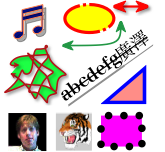
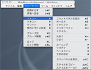

スケッチ風ドローを使って図形が描けます。テキストも任意の位置へ自由に配置できます。「スケッチ風ドロー」について詳しく知りたいときは、このページのリンクをブラウズするか、上部にある検索フィールドを使って「スケッチ風ドロー ヘルプ」を検索してください。問題が起きた場合は、「問題を解決する」のトピックを参照してください。
「スケッチ風ドロー」の新機能については、このリンクをクリックしてください：
ベクトル形式
ツールパネルの中から選択して作成した図形はベクトル形式となります。
TIFF,PNG,BMP,JPEGなどラスター形式の画像データも取り込むことができます。プリント時にはもとの画素数のままプリンタへ出力します。SVG,EPS,PDFなどベクトル形式の画像データを取り込んだ場合は、プリント時にベクトル形式のままプリンタへ出力します。RTF,フラットなRTFDも取り込むことができます。
作成したドキュメントは、スケッチ風ドロー形式で保存することは勿論、汎用のSVG,PDF,EPS,TIFF形式などへも書き出すことができます。ひとつのドキュメントは1ページ分の内容です。ひとつのファイルにはひとつのドキュメントしか保存できませんので、1ページ分でひとつのファイルになります。
OPENSTEPの開発環境に含まれているサンプルプログラムDrawと、Mac OS Xの開発環境に含まれているサンプルプログラムSketchを基に、多数の機能を追加したCocoaアプリケーションです。Objective-Cを使用し、Xcode を使ってコンパイルしています。スケッチ風ドロー形式で保存したファイルはSketchからは開くことができません。SketchあるいはOPENSTEPのDrawで保存したファイルはスケッチ風ドローから開くことができます。
ウインドウ
 |
ドキュメントウインドウの他に、各種ウインドウとパネルがあります。 |
オブジェクト
|  |
ツールパネルを使って作成されたテキスト・図形あるいはFinderからドラッグして作成されたテキスト・図形など個々の表示物をオブジェクトと呼びます。 |
メインメニュー
|  |
メインメニューから各種のコマンドを実行することにより、ドキュメントを保存したり汎用の画像形式に書き出したりします。テキストオブジェクトへの修飾は主にメインメニューを使って行います。 |
Sketchから拡張した部分についてはAppleスクリプトを適用できません。